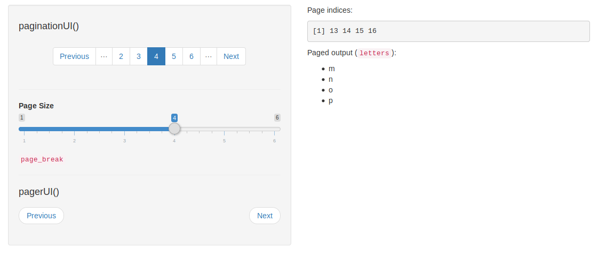
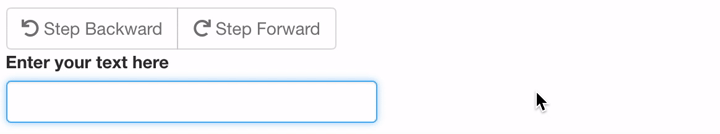

shinyThings is a collection of reusable Shiny components (modules and inputs).
My personal DRY storage for Shiny bits I’ve used in my projects.
Components

Pagination

Implements Bootstrap 3 pagination and pagers using Shiny modules.
Toggle Button Groups

Implements groups of toggle buttons using Bootstrap 3 button toolbars as a Shiny input. Each button can be toggled on or off, and the group may be limited to a single on button at a time, or multiple active buttons. (For one-button-always-selected behavior, see radio switch buttons below.)
Radio Switch Buttons

Implements a button-styled version of shiny::radioButtons(). One button is always active (unless unset by the app).
Adapted from CSS code by Mike Hemberger described in https://thestizmedia.com/radio-buttons-as-toggle-buttons-with-css/.
# Try it out
shinyThings::radioSwitchButtonsDemo()
# UI Side ----
# Set Default style
shinyThings::radioSwitchButtons_default_style(selected_background = "#00589a")
# Create input
shinyThings::radioSwitchButtons("input-id", choices = letters[1:5])
# Server Side ----
shinyThings::updateRadioSwitchButtons("input-id", selected = "b")Undo/Redo History

A Shiny module for undo/redo history. The Shiny module accepts an arbitrary reactive data value. Changes in the state of this reactive value are tracked and added to the user’s history. The user can then repeatedly undo and redo to walk through this stack. The module returns the current selected value of the reactive from this historical stack, or NULL when the app state was changed by the user.
# Try it out
shinyThings::undoHistoryDemo()
# UI Side ----
# UI with undo/redo buttons
undoHistoryUI("module-id")
# Server Side ----
# Create a reactive value whose state will be tracked. Note that you control
# the structure of the data being tracked and also how the data will be
# restored. `undo_app_state` will have the same structure.
undo_app_state <- undoHistory("module-id", value = reactive({
list(
text = input$a_text_input_id,
selected = input$a_select_input_id
)
}))
# Use an observer to update inputs as required as the user steps through the
# undo/redo history stack.
observe({
req(!is.null(undo_app_state))
updateTextInput(session, "a_text_input_id", value = undo_app_state()$text)
updateSelectInput(session, "a_select_input_id", selected = undo_app_state()$selected)
})